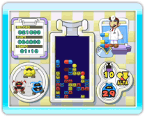
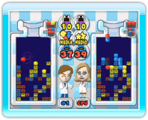
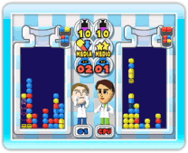

13 |
Giocare a Dr. Mario |
 |
In Dr. Mario ci sono tre modalità di gioco: 
● Classico Elimina tutti i virus per passare al livello di gioco successivo. Ogni volta che superi un livello, passerai a quello successivo, con un grado di difficoltà maggiore. Per vincere una partita per due giocatori, devi eliminare tutti i virus per primo o resistere fino alla disfatta dell’avversario. Più è alto il livello virus, più virus saranno presenti nel flacone. 
● Vs CPU Per vincere elimina tutti i virus prima della CPU o resisti finché non viene sconfitta. 
● Flash Per vincere in questa modalità devi eliminare tutti i virus lampeggianti per primo o resistere fino alla disfatta dell’avversario. I virus che lampeggiano si eliminano allo stesso modo di quelli normali. Se giochi da solo, sfiderai la CPU. |
 |
 |
 |